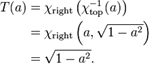
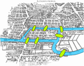
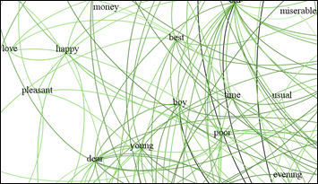

2010-03-29 16:07
admin
general, opinion, programming
graph, math, maths, network, programming, typology
the-seven-bridges
published
 Alan Skorkin has a great post on “you don’t need math skills to be a good developer but you do need them to be a great one.” Geo-technology developers have similar requirements, and the majority of GISs revolve around CRUD operations. However due to the nature of spatial data we occasionally get to meddle in the world’s of projections, geometry, typology, and set theory more than our counterparts in other sectors.
Whilst concentrating on algorithms and recursion is a definite benefit to all developers, us spatial developers need a few more specific tricks. Euler’s 1736 paper on Seven Bridges of Königsberg is one of the first academic writings on modern topology. The titles of these mathematics puzzles create an aura of mysteriousness and arcane knowledge that definitely sweetens the somewhat dour algebra underneath.
The solution (or non-solution) to this problem underpins many of the more advanced techniques used by GIS packages today. The “Travelling Salesman”, whilst conjuring up less interesting images, relies on similar principles of graph theory.
[caption id=”” align=”aligncenter” width=”202” caption=”Traditional desktop GIS sales take a slump..”][/caption]
The excellent ESRI online documentation provides details on all aspects of GIS, including networks and graphs.
[caption id=”” align=”alignleft” width=”167” caption=”What can happen if you don’t understand typology”][/caption]
Graph theory is the foundation for understanding networks and topology. A geographic information system (GIS) modeller should be familiar with the concepts and terminology of graph theory because it helps to classify and model connectivity and adjacency relationships among geographic features.
The underlying graphs of a network allow us to solve problems such as finding a shortest route, or analysing connectivity between points on a river network. It could certainly help a Chinese Postman.
Whilst being able to implement these algorithms from scratch is beyond the call of duty for most developers (except those who like to reinvent the wheel), an understanding of how they work, and being able to recognise the situations where they can be used, can save weeks of development time and lead to cleaner more elegant coding solutions.
Once you out in the “real-world” it is highly unlikely you are ever going to get taught this maths, and it becomes a little daunting realising you are now responsible for your own education. Even if you’ve already studied maths to a reasonable level, as the adage says - *use it or lose it*. This is brought home by my worriying belief that my mental arithmetic was superior as a child through constant use and learning tables by rote, than it is now after 10 years of programming.
Every now and again its useful to buy a book that deals with areas related to computer science, rather than a “How to..” book of the latest programming language or framework, to try and attain a broader understanding of the maths behind the APIs.
To try and illustrate my point that only a basic understanding of a branch of mathematics is required to produce useful, and sometimes spectacular results I attempted to use a specialised open-source tool armed with only a basic glossary of the terms used in graph theory.
Gephi is “an interactive visualization and exploration platform for all kinds of networks and complex systems, dynamic and hierarchical graphs.”
Amongst the sample datasets there is an adjacency network of common adjectives and nouns in the David Copperfield. I was able to import the data into the program and then export the SVG image shown below. Interestingly “happy” is seems to have as many connections to love as money, which is pleasant.

Gephi produces beautiful data and is definitely a project to keep an eye on - the Road map for version 1.0 includes Geographic data (latitude/longitude) which will open up all sorts of possibilities.
I’d categorise most people coding in the geospatial area (outside of those in academia or writing the internals of a GIS library), as developers, rather than computer scientists or programmers.
*(Developers) are consummate generalists without any truly deep specializations. They are expert at finding ways around problems and plugging components together to fulfil a set of requirements.*
A basic understanding of each of the branches of mathematics used by GIS is required to know what exactly you need to input, and to understand the output, of algorithms implemented by others. A grasp of terminology certainly helps navigate the user interfaces of specialised tools, or find help through search engines. At the very least it leads to an understanding of why Manifold is named manifold, and can stop or start us going round in circles.
Comments🔗
1. geographika » Automated Diagrams and Documentation **
[…] I previously wrote, one of the ways to get through the task of documenting a project is to turn the documentation […]
ReplyAdd Comment